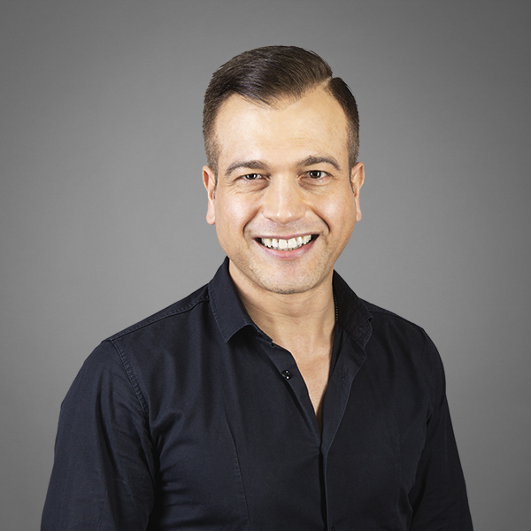

Linguist · PhD Scuola Normale Superiore, Pisa
syntax–semantics interface · noun phrase · partitives · quantity expressions · Romance languages
I am a linguist working on the syntax-semantics interface in Romance languages and English. I was a Marie Skłodowska-Curie Fellow (Career Restart) at the Leibniz-Centre General Linguistics (ZAS), Berlin (2019–2023), and a postdoctoral fellow at the Center for Mind/Brain Sciences (CIMeC), University of Trento (2012–2014). My doctoral studies were at Scuola Normale Superiore, Pisa, with research stays at UCLA and the University of Geneva.
My work established that discourse-linked nounless DPs involve covert partitive structures whose availability depends on contextual familiarity, and produced the first typology of partitive constructions with null operators. I guest-edited the Glossa special collection Partitives and Partitivity (2019), coordinating contributions across six languages. My study of Italian proportional determiners (fractions, percentages) identified five morpho-syntactic factors that determine whether they receive conservative or non-conservative readings.
My current research examines Italian metà and mezzo and English half: how their meanings depend on grammar and shared knowledge.
I combine theoretical research with corpus analysis, behavioural experiments and statistical analysis in R.
Alongside my linguistics research, I develop Python applications using language models and reference material. My practical NLP experience includes small-scale BERT training and fine-tuning in PyTorch, as well as work with TensorFlow.
Full list on Google Scholar.
Falco, M. & Zamparelli, R. (2024). Discourse-linked DPs as covert partitives: Ellipsis and pro-form strategies in Italian and English. Isogloss: Open Journal of Romance Linguistics 10(3), 1–33. doi
Falco, M. (2023). Italian proportions and (non-)conservativity. Glossa: a journal of general linguistics 8(1). doi
Falco, M. & Zamparelli, R. (2019). Partitives and partitivity. Glossa: a journal of general linguistics 4(1), 111. doi · In the special collection Partitives, guest-edited by M. Falco & R. Zamparelli.
Falco, M. & Zamparelli, R. (2016). The only real pro-nouns. In The Impact of Pronominal Form on Interpretation, 107–134. De Gruyter. doi